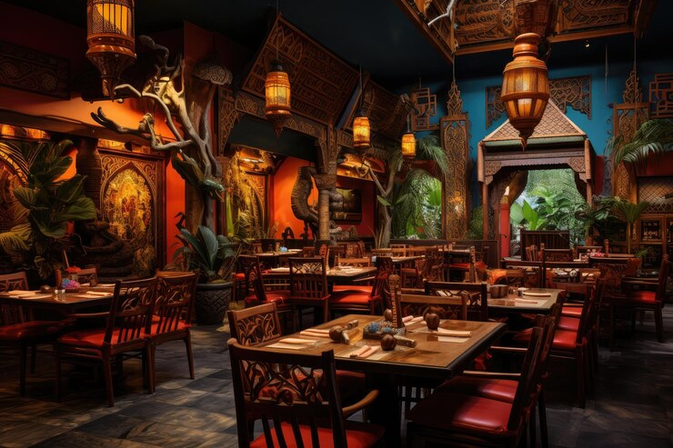

Jhigu: Chhen

Nestled in Lokanthali, Bhaktapur, Nepal, Jhigu Chhen isn't just a restaurant; it's a living monument to Newari culture. Our establishment, steeped in history and tradition, offers more than just a meal—it's an immersive experience that transports guests to the heart of Nepal's vibrant heritage. Step inside Jhigu Chhen, and you'll find yourself surrounded by the echoes of centuries past. From the weathered wooden beams overhead to the ancient artifacts adorning the walls, every corner of our restaurant tells a story. Here, hospitality reigns supreme, and every guest is welcomed like an old friend. It's not just about serving food; it's about sharing a piece of our culture and making sure every visitor leaves with a full belly and a heart full of memories.
At Jhigu Chhen, we take pride in preserving the authenticity of Newari cuisine. From classic dishes like Yomari and Bara to lesser-known gems waiting to be discovered, each bite is a journey through the flavors of Nepal. But our restaurant offers more than just great food; it's a window into a world rich in tradition and heritage. Every visit is an opportunity to learn something new about Newari culture and create memories that will last a lifetime.
So, whether you're a seasoned foodie or just someone looking for a taste of something different, we invite you to join us at Jhigu Chhen. Come experience the warmth of Nepalese hospitality, savor the flavors of tradition, and embark on a culinary adventure unlike any other. We promise you won't leave disappointed—because here at Jhigu Chhen, every meal is an experience you won't soon forget.